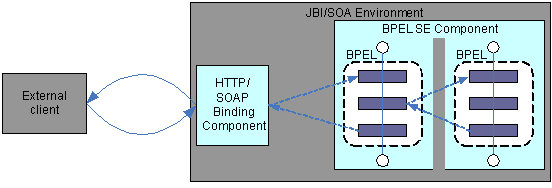
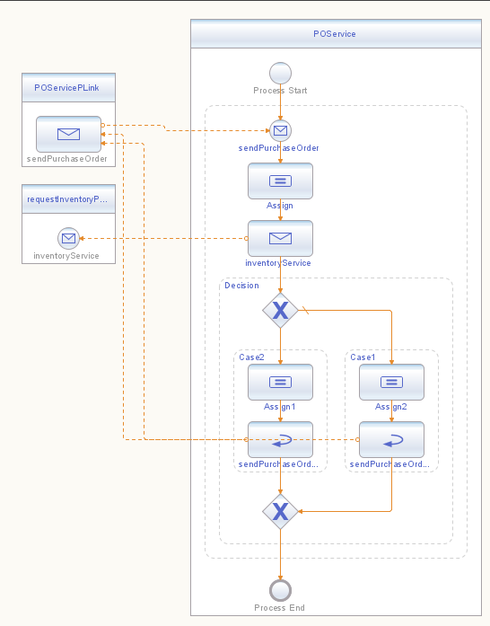
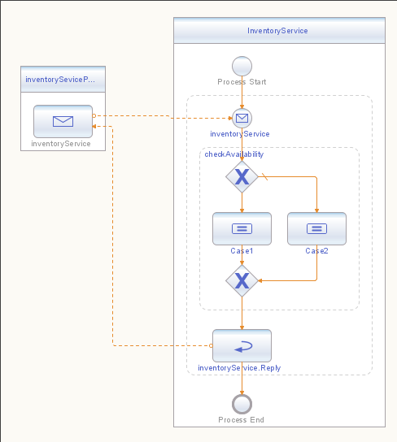

Kiran Bhumana, Ryan Kennedy, Shauna Pickett-Gordon
The Business Process Execution Language (BPEL) provides a simple and efficient way of bringing multiple web services together into new composite services that represent business processes (also called BPEL processes).
Before attempting to model real-world business processes using BPEL, we need to understand the steps involved in describing business processes in this new language, and how to consume and provide for synchronous web service operations from within a BPEL process.
Synchronous operations are appropriate in business processes that require an immediate response to a request. Execution proceeds on the consumer side only after the response arrives and is consumed.
Two aspects are demonstrated in this solution:
Provisioning a synchronous operation (also called a request-response, or in-out, operation) involves receiving a message and replying with a response message as defined by the web service. BPEL defines the following constructs to enable the provisioning of a synchronous operation:
receive activity or an onMessage
activityreply activityA given pair of activities--consisting of a receive
(or onMessage) and a reply--together
provision the request-response for a single synchronous operation.
Consuming an in-out operation involves sending a message and
expecting a response message as defined by the web service. BPEL
defines an invoke activity that enables the consumption
of operations defined by partner web services. A BPEL process commonly
invokes multiple web services as part of its orchestration, and then
makes use of the response messages.
With these BPEL constructs and those explained in the second BPEL
BluePrint, you can
define complex business processes that mirror relationships and
dependencies between real-world business interactions.
You'll need to consider certain design details when you use the Business Process Execution Language (BPEL) to describe the following:
Provisioning a synchronous operation involves receiving a message and replying with a message defined by the web service. Consuming a synchronous operation involves sending a message and expecting a response message defined by the web service.
When designing a business process that incorporates synchronous web service interactions, the following constructs are needed.
partnerLinks representing partner web servicesvariables that store data exchanged between web
servicesinvoke activity to consume a servicereceive-reply activity pair to provide a serviceThe following solution shows how to create and use the BPEL artifacts to both provide for and consume synchronous web service operations. First, an external client consumes a single synchronous operation provisioned by a BPEL process. Then, this BPEL process consumes a synchronous operation provisioned by another BPEL process. The solution is illustrated next.

Figure 1: Synchronous Web Service Interaction
Although this example illustrates a business process consisting of multiple synchronous interactions, a single BPEL process can provision and consume both synchronous and asynchronous operations. Refer to BluePrint 2, Asynchronous Web Service Interactions Using BPEL, for an example of how to combine synchronous and asynchronous interactions in a BPEL process.
Two web services are involved here: a purchase order service, POService,
which is consumed by an external client through SOAP over HTTP; and an
inventory check service, InventoryService, consumed by
the BPEL process that provisions the purchase order service. Both POService
and InventoryService are implemented as BPEL services.
When the purchase order service provider receives the client request, the following events happen:
orderDescription value
starts with OrderVal, then the order's status is
available in the inventory. When you define a business process, you are creating a new web service that comprises existing web services. The WSDL for this new web service defines the relationships between this and other web services.
<partnerLinkType>
A partnerLinkType specifies the relationship between
two services by defining the role that each service implements. Each
role specifies exactly one WSDL portType type that must
be implemented by the service that implements that role.
In this example, the PurchaseOrder WSDL defines a partnerLinkType
with a role purchaseService. The purchaseService
role refers to the sendPurchaseOrder WSDL operation
through a portType called purchaseOrderPT.
<plink:partnerLinkType name="purchasingLT">
<plink:role name="purchaseService"
portType="tns:purchaseOrderPT"></plink:role>
</plink:partnerLinkType>
The sendPurchaseOrder operation defines an input to be
sent to the provider, and expects either a reply or a fault. In a web
service in-out operation, an input message is mandatory. You cannot
define this kind of operation with only a response or a fault. The
invoker may send an input message and expect either a response message
or fault. Synchronous web service calls are similar to method calls or
subroutines in most programming languages.
<portType name="purchaseOrderPT">
<operation name="sendPurchaseOrder">
<input name="sendPurchaseOrderRequest" message="tns:POMessage"></input>
<output name="sendPurchaseOrderReply" message="tns:POMessage"></output>
<fault name="cannotCompleteOrder"
message="tns:orderFaultType"></fault>
</operation>
</portType>
The InventoryService WSDL defines a partnerLinkType
with the role inventoryService. This role refers to the inventoryService
operation through the portType called inventoryPortType.
<plink:partnerLinkType name="inventoryRequestingLT">
<plink:role name="inventoryService"
portType="tns:inventoryPortType"></plink:role>
</plink:partnerLinkType>
The inventoryService operation expects a purchaseOrder
message, and replies with either inventoryStatus or inventoryFaultType.
<portType name="inventoryPortType">
<operation name="inventoryService">
<input name="purchaseOrder"
message="tns:POMessage"></input>
<output name="inventoryStatus"
message="tns:InventoryMessage"></output>
<fault name="inventoryFaultType"
message="tns:inventoryFault"></fault>
</operation>
</portType>
NOTE: If the WSDL file of an existing web service does not
contain a definition for partnerLinkType, you can create
a wrapper WSDL file to import the original WSDL file, and then add the partnerLinkType
definition in the wrapper. Afterwards, you can refer to the wrapper
from your BPEL process.
<partnerLink>
The partnerLink elements specify the partners and
clients with which a BPEL process interacts. Each partnerLink
corresponds to a specific partnerLinkType as defined in
the WSDL.
A partnerLink element must also contain one or two
roles:
myRole. This specifies the role of the BPEL process.
If you define only myRole for partnerLink, you enable any
partner or client to interact with the BPEL process, without requiring
anything of the other partner or client. partnerRole. This specifies the role of the partner
or client. If you define only partnerRole for partnerLink,
you enable interactions with a partner or client, without imposing
requirements on its caller.The POService BPEL process defines a partnerLink
called POServicePLink to indicate its role as a provider
of the operation sendPurchaseOrder.
<partnerLink name="POServicePLink"
partnerLinkType="pos:purchasingLT"
myRole="purchaseService"/>
Since POService also consumes the InventoryService,
a partnerLink called requestInventoryPLink
is also defined.
<partnerLink name="requestInventoryPLink"
partnerLinkType="invs:inventoryRequestingLT"
partnerRole="inventoryService"/>
<variables>
BPEL defines variables that the business process uses as part of its
logic. Next are some variables defined by the POService
BPEL process.
<variables>
<variable name="purchaseOrderRequest"
messageType="pos:POMessage"></variable>
<variable name="purchaseOrderReply"
messageType="pos:POMessage"></variable>
<variable name="inventoryServiceRequest"
messageType="invs:POMessage"></variable>
<variable name="inventoryServiceReply"
messageType="invs:InventoryMessage"></variable>
</variables>
<receive> and <reply>
In a receive-reply pair, only one outstanding reply
activity can correspond to an executed receive. This
means that, at most, one reply is executed for a given receive.
In this example, one receive is matched by two reply
activities: one corresponds to the expected valid response, and the
other corresponds to a fault defined on the operation.
In the static BPEL model, there are two matching reply
activities for a single receive. However, at runtime,
only one reply is executed, because the reply
activities are on mutually exclusive branches of execution. Therefore,
the execution doesn't result in a missingRequest standard
fault, as defined in the BPEL specification.
<receive name="sendPurchaseOrder"
partnerLink="POServicePLink"
portType="pos:purchaseOrderPT"
operation="sendPurchaseOrder"
variable="purchaseOrderRequest"
createInstance="yes">
</receive>
<reply name="sendPurchaseOrder.Reply"
partnerLink="POServicePLink"
portType="pos:purchaseOrderPT"
operation="sendPurchaseOrder"
variable="purchaseOrderRequest">
</reply>
<invoke>
An invoke activity has the effect of consuming a web
service.
<invoke name="inventoryService"
partnerLink="requestInventoryPLink"
portType="invs:inventoryPortType"
operation="inventoryService"
inputVariable="inventoryServiceRequest"
outputVariable="inventoryServiceReply">
</invoke>
A visual form of the POService BPEL process is shown
next.

Figure 2: The POService BPEL Process
Note: While the WS-BPEL
specification itself does not include a graphical
notation, many tools provide visual diagramming environments that
generate BPEL source code. The BPEL Designer available in the NetBeans
Enterprise Pack 5.5 Beta IDE provides a visual editor for
diagramming business processes, as seen above.
The BPEL process InventoryService defines a partnerLink
called inventoryServicePLink, indicating its role as the
service provider.
<partnerLink name="inventoryServicePLink"
partnerLinkType="invs:inventoryRequestingLT"
myRole="inventoryService"/>
Here are some of the variables defined by the InventoryService
process.
<variables>
<variable name="purchaseOrder"
messageType="invs:POMessage"></variable>
<variable name="inventoryStatus"
messageType="invs:InventoryMessage"></variable>
</variables>
The InventoryService process defines a matching receive
and reply for the operation, as follows.
<receive name="inventoryService"
partnerLink="inventoryServicePLink"
portType="invs:inventoryPortType"
operation="inventoryService"
variable="purchaseOrder"
createInstance="yes">
</receive>
<reply name="inventoryService.Reply"
partnerLink="inventoryServicePLink"
portType="invs:inventoryPortType"
operation="inventoryService"
variable="inventoryStatus">
</reply>
A visual form of the InventoryService BPEL process is
shown next.

Figure 3: The InventoryService BPEL Process
Refer to the BPEL process code for further details of the business logic implementation.
The following input XML instance gives a valid response.
<?xml version="1.0" encoding="UTF-8"?>
<soapenv:Envelope xmlns:soapenv="http://schemas.xmlsoap.org/soap/envelope/"
xmlns="http://manufacturing.org/xsd/purchase" xmlns:xsi="http://www.w3.org/2001/XMLSchema-instance"
xsi:schemaLocation="http://schemas.xmlsoap.org/soap/envelope/ http://schemas.xmlsoap.org/soap/envelope/">
<soapenv:Body>
<sendPurchaseOrder>
<purchaseOrder>
<purchaseOrder xmlns="http://manufacturing.org/xsd/purchase">
<orderId>012341</orderId>
<customerId>9876</customerId>
<orderDescription>OrderVal_Any_Description</orderDescription>
<price></price>
</purchaseOrder>
</purchaseOrder>
</sendPurchaseOrder>
</soapenv:Body>
</soapenv:Envelope>